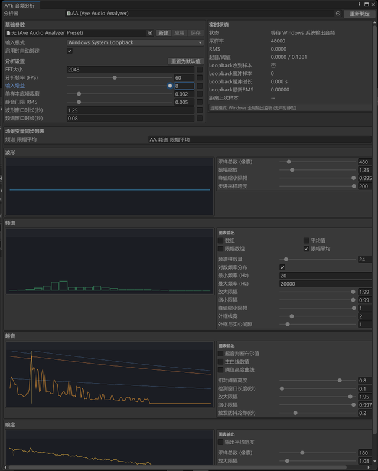
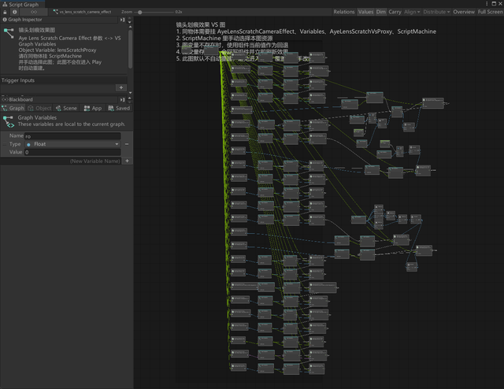
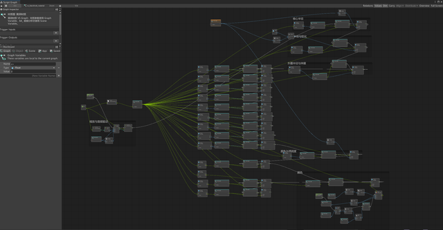

这是一段我自己在 Unity 里做的短周期原型开发: 因为时间比较紧、项目初期目标也不太明晰, 所以我先从一些通用的可复用组件着手, 避免做无意义工作. 最终我做出了一套音频驱动视觉系统, 核心思路是把音频输入转成控制数据, 再用 Visual Scripting 去驱动 Shader 和我自己写的镜头后处理相机组件, 让画面跟着声音一起变化.

这张截图展示了音频分析模块的界面, 图中各项参数右键可以提取为 Unity 场景变量交由 Visual Scripting 分发处理.

这张图展示了音频分析如何驱动镜头后处理的划痕效果.

这张图展示了音频分析如何驱动 shader 参数.